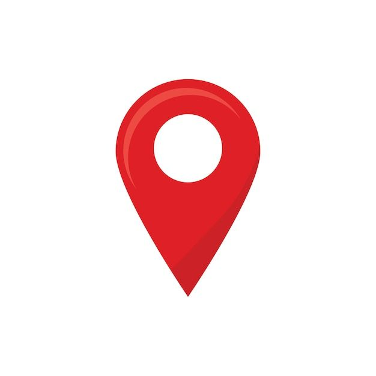

PETA
DESKRIPSI DATA
Titik Industri
Data lokasi industri berdasarkan nama, tipe dan alamat untuk mendukung analisis spasial & perencanaan wilayah.

Batas Wilayah
Menampilkan batas administratif antar kecamatan di Bekasi sebagai referensi peta wilayah.

Elis Lisnawati
WebGIS ini dikembangkan secara mandiri oleh Elis Lisnawati, mahasiswa Program Studi Sains Informasi Geografi, Universitas Pendidikan Indonesia, sebagai bagian dari Project akhir mata kuliah WEBGIS. Fokus utama peta ini adalah menampilkan sebaran industri di Kabupaten Bekasi sebagai bentuk kontribusi terhadap pemanfaatan teknologi geospasial dalam mendukung transparansi dan perencanaan wilayah.